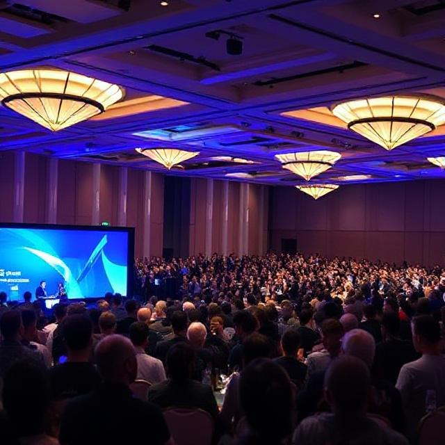
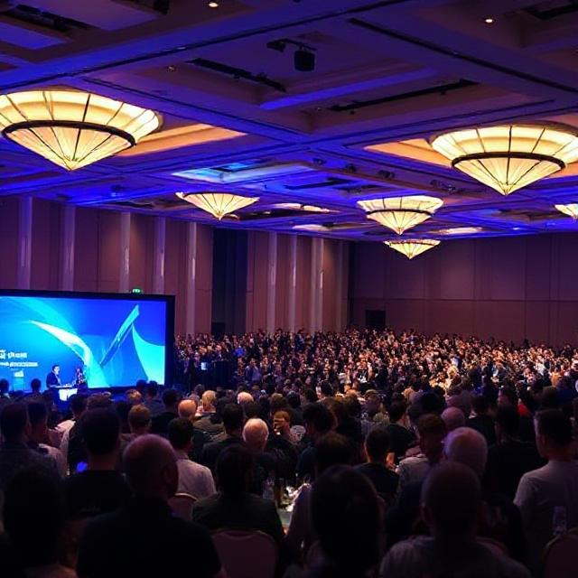

Our History
TechCon began in 2010 as a small gathering of developers and engineers. Over the years, it has grown into one of the most influential technology conferences in the world.
TechCon began in 2010 as a small gathering of developers and engineers. Over the years, it has grown into one of the most influential technology conferences in the world.
TechCon is dedicated to advancing innovation, diversity, and ethical progress in the tech industry. Our goal is to create a platform where technology leaders and newcomers alike can collaborate, inspire, and shape the future.
A pioneer in computing, Dr. Lovelace spoke on algorithmic thinking and its future impact on AI.
Known for her work on early compilers, Grace Hopper inspired the next generation of software engineers at TechCon 2018.
Creator of Linux, Linus discussed open-source collaboration and leadership at TechCon 2020.